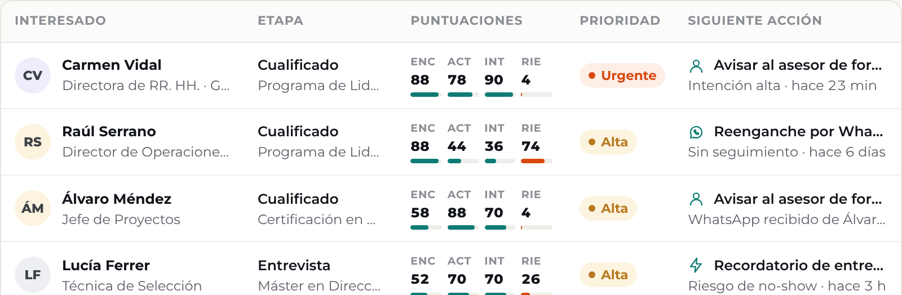
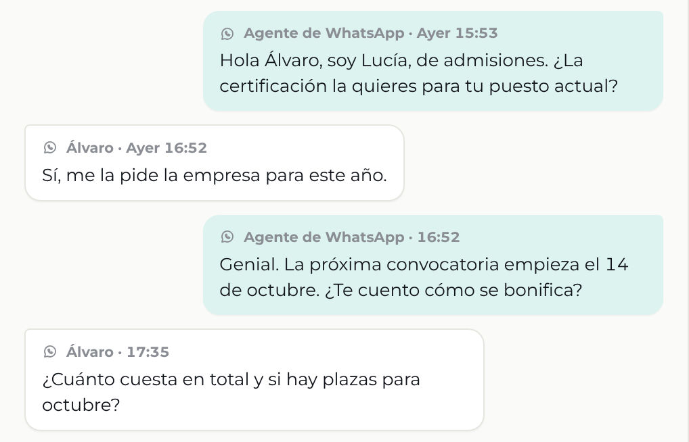
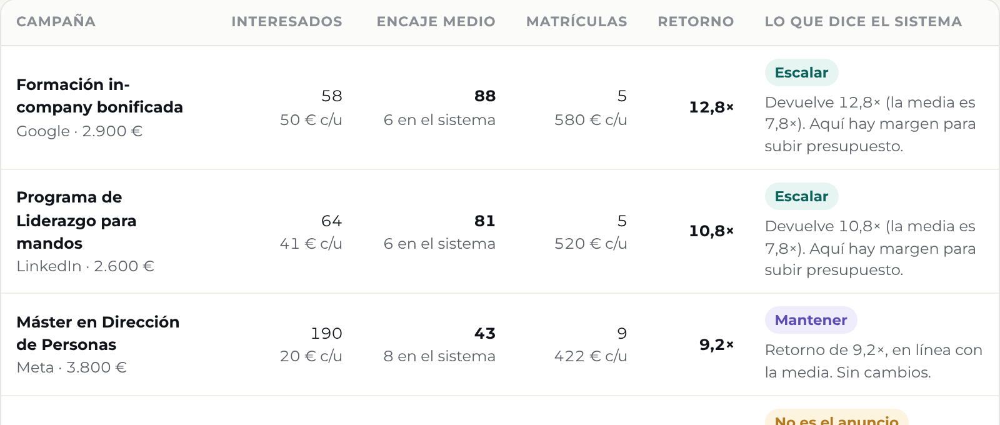

Solicitud
Atención
Seguimiento
Matrícula
desde la solicitud
00:00
Caso de ejemplo
Oportunidades

Conseguir solicitudes para tu academia
es una cosa.
Solicitud
Atención
Seguimiento
Matrícula
desde la solicitud
02:00
Caso de ejemplo
Conversación · WhatsApp

Recibe un WhatsApp
personalizado.
Solicitud
Atención
Seguimiento
Matrícula
desde la solicitud
09:30
Caso de ejemplo
R
Raquel · Escuela Norte
Llamada en curso · 00:07
Marcador · se sustituye por la grabación real
Raquel
«Hola, Laura. Te llamo por el curso de tarde…»
Solicitud
Atención
Seguimiento
Matrícula
desde la solicitud
+3 días
Caso de ejemplo
Oportunidades · siguiente acción
Tu equipo sabe
cuándo volver a contactar.
Solicitud
Atención
Seguimiento
Matrícula
desde la solicitud
+42 días
Caso de ejemplo · datos demostrativos
Anuncios · del anuncio a la matrícula

Qué campañas terminan
trayendo alumnos.
Captación
Atención
Seguimiento
sobre las herramientas que ya utilizas
Solicita un diagnóstico